Interior Design Assistant & Photographer
Supported residential design projects through material and sample sourcing, finish and furnishing research, on-site photography, and the organization and editing of visual assets.
Portfolio
I am a Los Angeles-based creative and recent UC Santa Barbara graduate with experience in interior design, photography, luxury hospitality, event production, and visual content. I enjoy combining strong organization with a thoughtful visual perspective to support polished, detail-driven projects.
Supported residential design projects through material and sample sourcing, finish and furnishing research, on-site photography, and the organization and editing of visual assets.
Delivered polished service in a luxury hospitality environment by managing reservations, tracking VIP preferences, coordinating dining room flow, and communicating guest needs.
Assist with client events by building presentation decks, coordinating vendors, tracking expenses, handling administrative tasks, and creating social media content.
Create and organize content plans, maintain a consistent visual presence, support audience growth, and communicate with potential business partners.
Sociology major, Media Arts & Design minor, and Technology Management Certificate. Semester abroad at the University of Barcelona in Fall 2024.
Photography captured while working as an Interior Design Assistant at Janette Mallory Interiors. I was responsible for documenting the completed spaces through photography; I was not the interior designer for these projects.
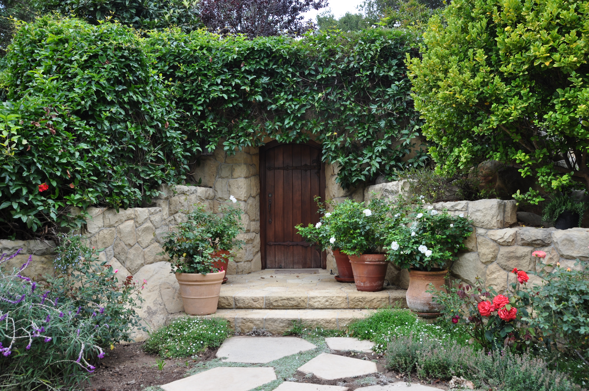
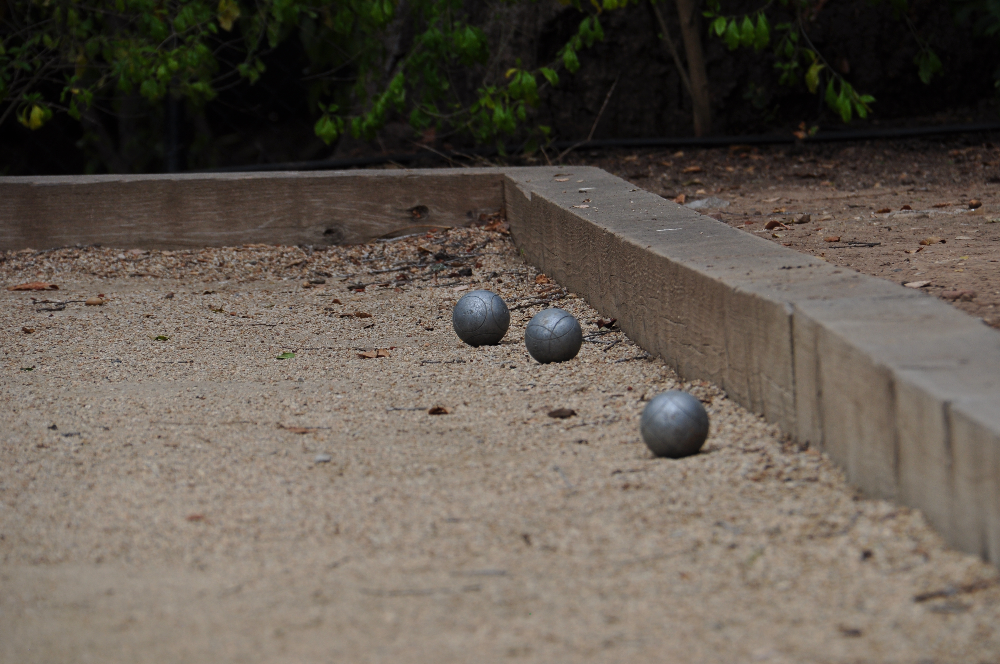
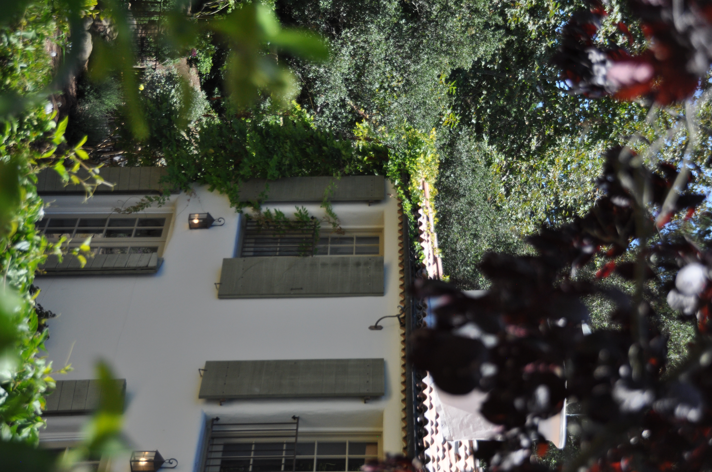
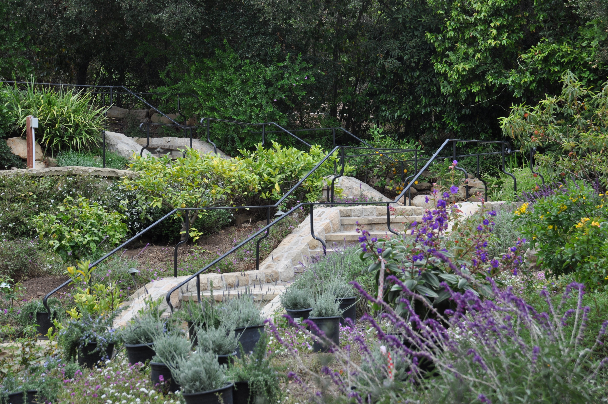
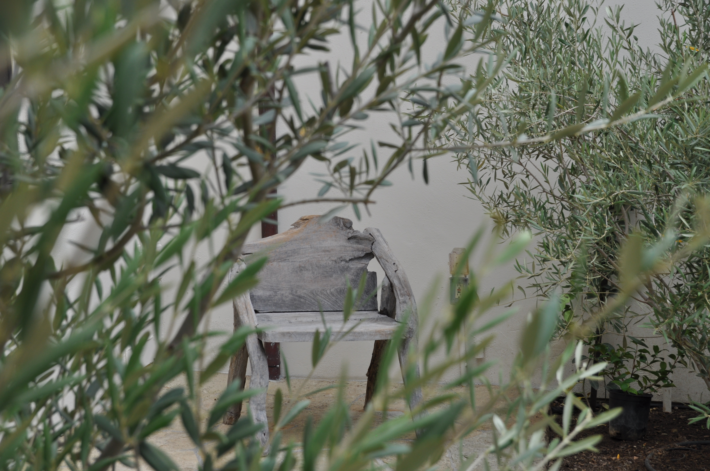

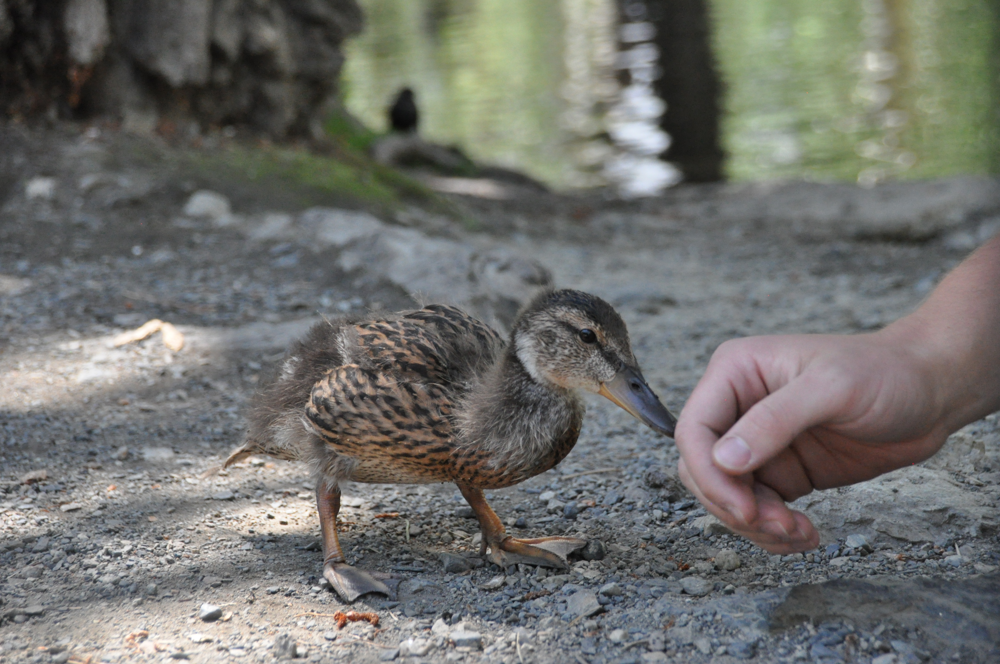
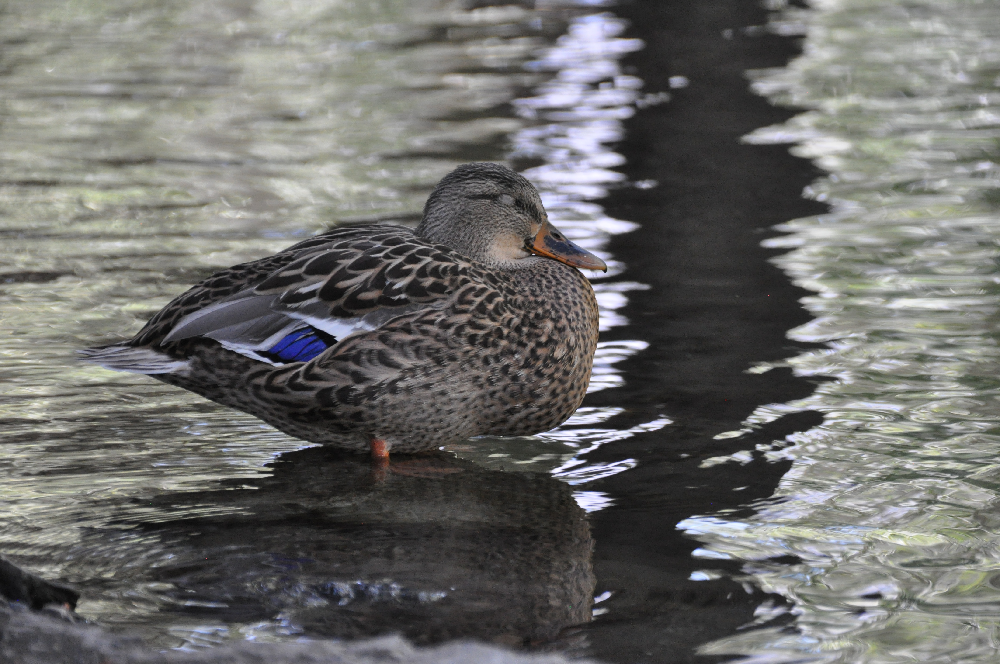
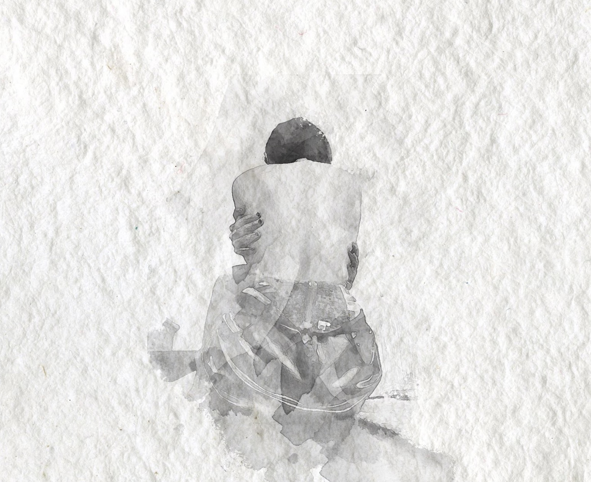


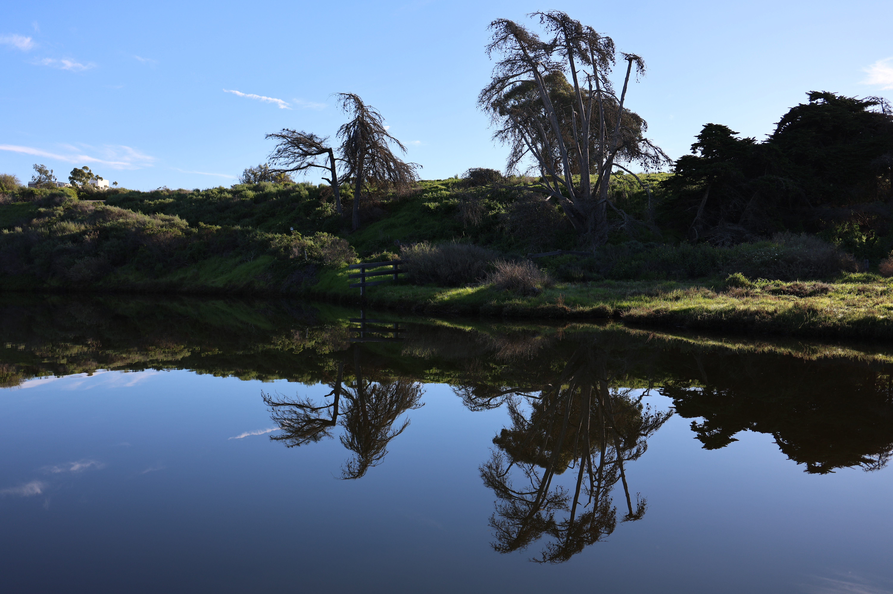
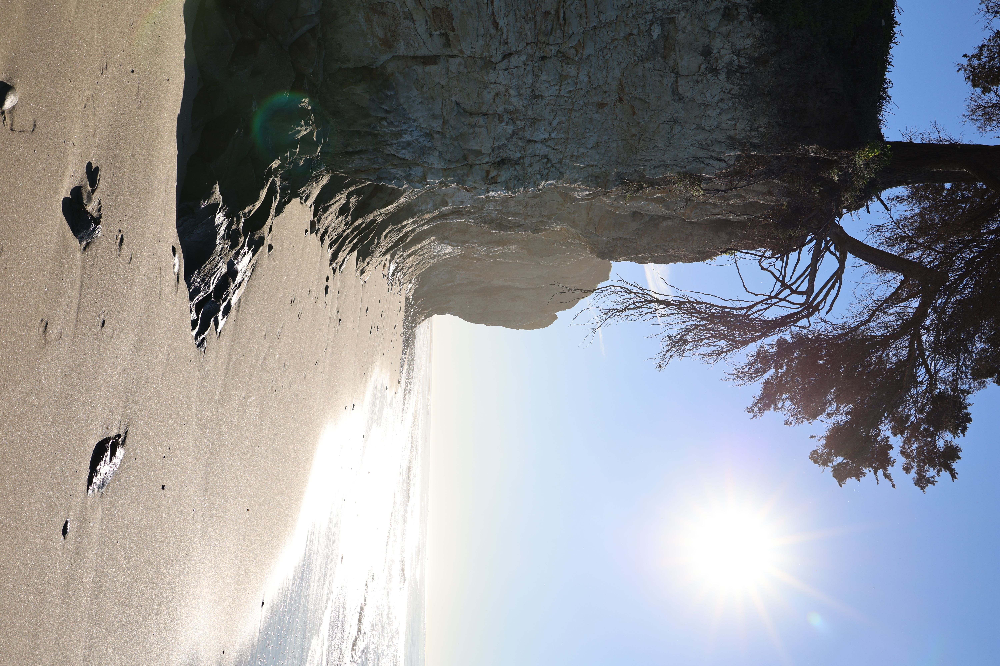
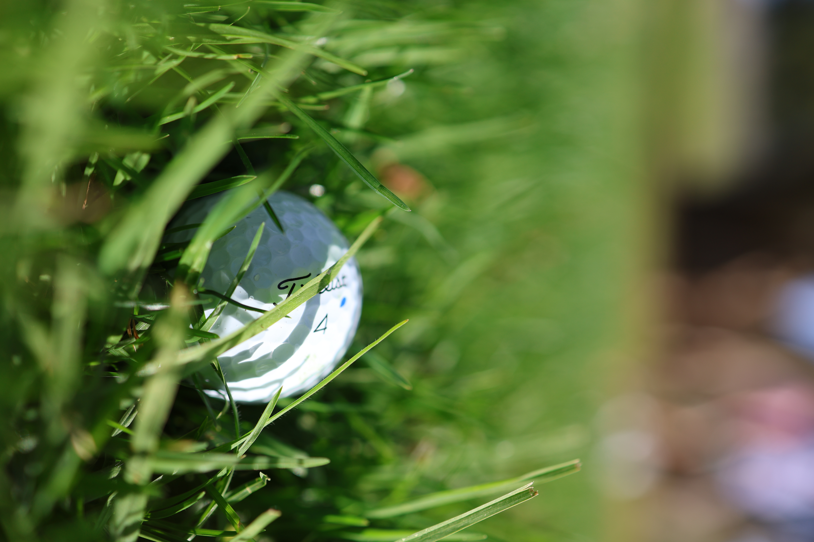
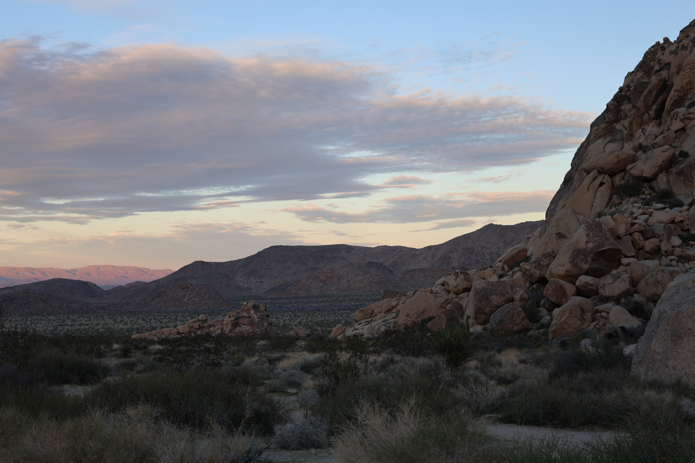
Email avatartakovsky1@gmail.com • Los Angeles, California • (818) 798-4050